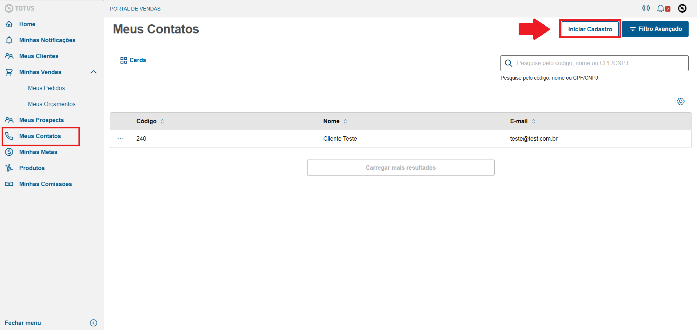

Nessa tela você pode criar contatos dos seus clientes, vá em Iniciar Cadastro para criar um novo
1- Insira um Código> de 6 digitos, esse codigo é para identificação, coloque o que for melhor para seu uso
2- Insira o Nome do Contato
3- Insira o E-mail
4- Clique em Avançar
1- Escolha o Tipo de endereço, Comercial ou Residencial
2- Escolha o Estado
3- Escolha a Cidade
4- Insira a Rua
5- Insira o CEP
6- Insira o Bairro
7- Insira o Complemento se necessário
1- Escolha o Tipo de telefone
2- Insira o DDD
3- Insira o Telefone
4- Insira um Complemento se necessário
5- Clique em Salvar